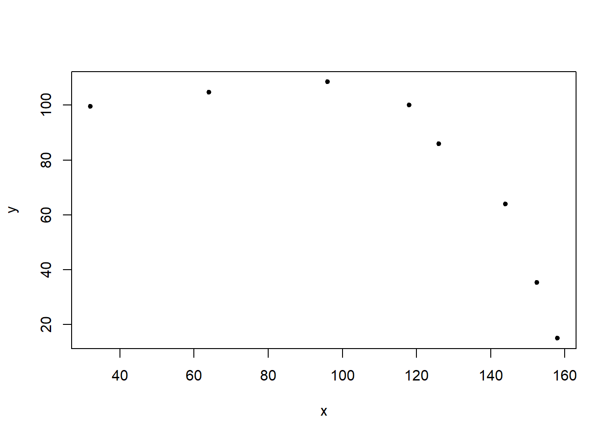
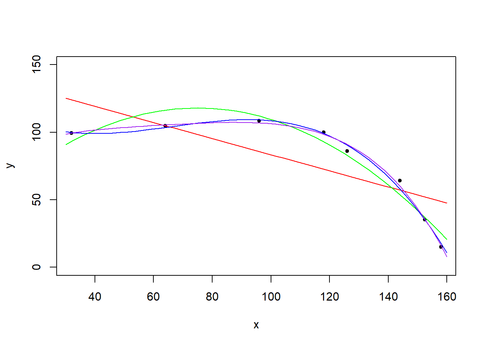
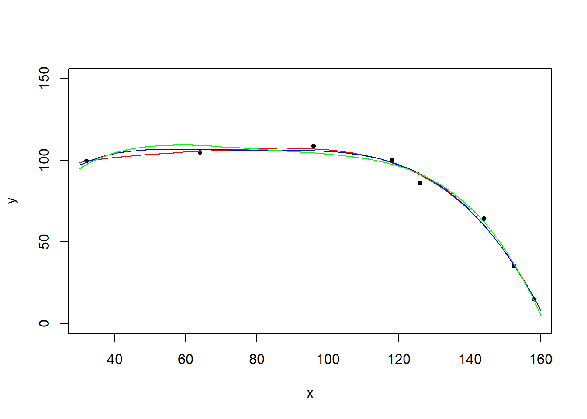

“Curve fitting” (dopasowanie krzywej) to zadanie sprowadzająca się do szukania najbardziej dopasowanego modelu.
W przykładach ograniczymy się do jednej zmiennej objaśniającej, jednak można to w dosyć prosty sposób zastosować również przy kilku zmiennych objaśniających.
x <- c(32,64,96,118,126,144,152.5,158)
y <- c(99.5,104.8,108.5,100,86,64,35.3,15)
plot(x,y, pch=20)
Stwórzmy kilka modeli i zrób wykresy teoretycznych wartości z modelu:
model1 <- lm(y~x)
model2 <- lm(y~poly(x,2,raw=TRUE))
model3 <- lm(y~poly(x,3,raw=TRUE))
model4 <- lm(y~poly(x,4,raw=TRUE))
x.axis <- seq(30,160, length=50)
plot(x,y,pch=20,ylim=c(0,150))
lines(x.axis, predict(model1,data.frame(x=x.axis)), col="red")
lines(x.axis, predict(model2,data.frame(x=x.axis)), col="green")
lines(x.axis, predict(model3,data.frame(x=x.axis)), col="blue")
lines(x.axis, predict(model4,data.frame(x=x.axis)), col="purple")
Sprawdźmy \(R^2\):
summary(model1)$r.squared## [1] 0.5759157summary(model2)$r.squared## [1] 0.9473663summary(model3)$r.squared## [1] 0.9923689summary(model4)$r.squared## [1] 0.9943288Sprawdźmy skorygowane \(\overline{R}^2\):
summary(model1)$adj.r.squared## [1] 0.505235summary(model2)$adj.r.squared## [1] 0.9263129summary(model3)$adj.r.squared## [1] 0.9866455summary(model4)$adj.r.squared## [1] 0.9867671Co nam pokaże anova?
anova(model1,model2,model4,model3)## Analysis of Variance Table
##
## Model 1: y ~ x
## Model 2: y ~ poly(x, 2, raw = TRUE)
## Model 3: y ~ poly(x, 4, raw = TRUE)
## Model 4: y ~ poly(x, 3, raw = TRUE)
## Res.Df RSS Df Sum of Sq F Pr(>F)
## 1 6 3660.8
## 2 5 454.3 1 3206.4 196.4919 0.0007862 ***
## 3 3 49.0 2 405.4 12.4212 0.0353688 *
## 4 4 65.9 -1 -16.9 1.0368 0.3835381
## ---
## Signif. codes: 0 '***' 0.001 '**' 0.01 '*' 0.05 '.' 0.1 ' ' 1Dodajmy model nieliniowy.
model5<-nls(y~poly(x,5,raw=TRUE)%*% coef, start = list(coef = c(a = 1, b = 2, c=2, d=4, e=2)))
anova(model4,model5)## Warning in anova.lmlist(object, ...): models with response '"NULL"' removed
## because response differs from model 1## Analysis of Variance Table
##
## Response: y
## Df Sum Sq Mean Sq F value Pr(>F)
## poly(x, 4, raw = TRUE) 4 8583.2 2145.81 131.5 0.001064 **
## Residuals 3 49.0 16.32
## ---
## Signif. codes: 0 '***' 0.001 '**' 0.01 '*' 0.05 '.' 0.1 ' ' 1Musimy porównywać w większości wypadkóW modele “tego samego typu”:
model6<-nls(y~poly(x,4,raw=TRUE)%*% coef, start = list(coef = c(a = 1, b = 2, c=2, d=1)))
anova(model6, model5)## Analysis of Variance Table
##
## Model 1: y ~ poly(x, 4, raw = TRUE) %*% coef
## Model 2: y ~ poly(x, 5, raw = TRUE) %*% coef
## Res.Df Res.Sum Sq Df Sum Sq F value Pr(>F)
## 1 4 79.383
## 2 3 60.188 1 19.195 0.9568 0.4001Jak zatem porównywać? Pierwsza opcja to ręczne liczenie \(R^2\).
ym<-mean(y)
yh<-fitted(model4)
ssm<-sum((yh-ym)^2)
sst<-sum((y-ym)^2)
r2<-ssm/sst
r2## [1] 0.9943288yh<-fitted(model5)
ssm<-sum((yh-ym)^2)
sst<-sum((y-ym)^2)
r2<-ssm/sst
r2## [1] 0.9946821yh<-fitted(model6)
ssm<-sum((yh-ym)^2)
sst<-sum((y-ym)^2)
r2<-ssm/sst
r2## [1] 0.998033Zobaczmy wykresy.
plot(x,y,pch=20,ylim=c(0,150))
lines(x.axis, predict(model4,data.frame(x=x.axis)), col="red")
lines(x.axis, predict(model5,data.frame(x=x.axis)), col="blue")
lines(x.axis, predict(model6,data.frame(x=x.axis)), col="green")
Jak to mierzyć? Możemy sprawdzić tzw. kryterium informacyjne Akaikego (Akaike Information Criterion) - link.
AIC(model1)## [1] 77.71092AIC(model2)## [1] 63.01831AIC(model3)## [1] 49.56936AIC(model4)## [1] 49.19471AIC(model5)## [1] 50.84723AIC(model6)## [1] 51.06176x<-seq(10,50,1)
y<-100/x+rnorm(1,sd=2)Poszukaj najlepszego modelu.